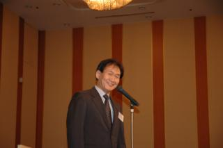
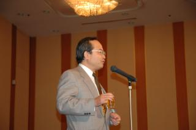
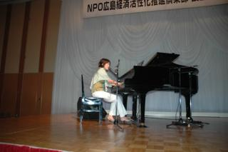
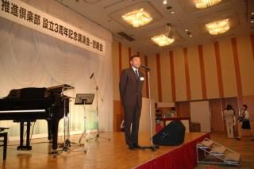
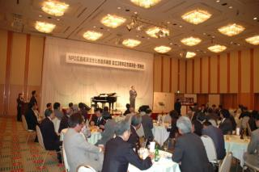

|
設立３周年記念イベント
2004年 6月16日
於：ホテルグランヴィア広島
第１部 記念講演
『広島県内企業における生き残り戦略』
講師：関根 淳 氏（日本銀行 広島支店長）
①広島県の『重厚長大産業』における企業内変革の動き
②当地自動車関連メーカーにおける生き残り戦略
③大手量販店の進出が相次ぐ中での県内小売業者の戦略
④県内における環境ビジネスの動向 など
第２部 懇 親 会
|
|
日本銀行広島支店 関根支店長より
支店長自らの足で集められた実例を多数盛り込んでいただき、大変充実した内容のお話をうかがうことが出来ました。
|
広島商工会議所 中小企業支援部 中重部長より、あたたかいご祝辞を賜りました。
|
 |
|  |
広島ガス（株）事業開発部の高橋副部長より、素敵な乾杯のご発声を頂きました。
|
第２部 懇 親 会
ゲストに東 真紀さんをお招き。大変素敵な歌声を披露していただきました。
(昨年7月インディーズデビュー曲「雷鳴」をリリース。同年HMV広島にて年間チャート1位達成!! 今月６月９日 ２ｎｄシングル「すみれ」発売。いま注目の広島出身 実力派シンガーソングライター）
|
 |
|  |
広島テレビ「進め！スポーツ元気丸」のサッカーコメンテーター、吉田さんがセミナーにご参加されていました。コメントをお願いしますと、広島経済の活性と共に、スポーツを通じて広島を元気に、と。
|
交流会にて。テーブルも自由に移動していただけるようにし、様々なご職業・立場の方々同士ご交流。
|
 |
|